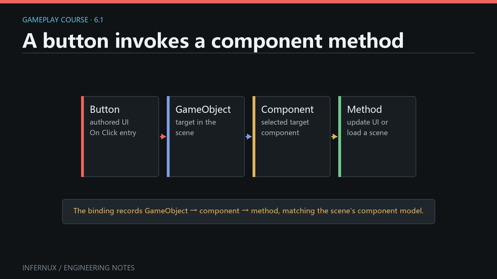

Gameplay Foundations · Chapter 6
UI actions and scene flow
A menu Button can call a public method on an attached Python component. That method can validate the action, record a useful message, and ask Infernux.scene.SceneManager to load another authored scene from the build list.
This chapter builds a two-scene loop: MainMenu.scene contains a Play Button, and Level01.scene contains a Return Button. Both use persistent On Click () bindings configured in the Inspector.

Prepare two authored scenes
Create an Assets/Scenes folder, then prepare these saved scene assets:
- Save the first scene as
Assets/Scenes/MainMenu.scene. - In Hierarchy, create UI > Canvas.
- Create UI > Button as a child of the Canvas. Rename its GameObject to
PlayButtonand set itsUIButtonlabel toPlay. - Create an empty GameObject named
SceneFlow. It will own the component that the Button calls. - Save the scene.
- Create a second scene and save it as
Assets/Scenes/Level01.scene. - Add a Canvas, a child Button named
ReturnButtonwith labelReturn to menu, and an emptySceneFlowGameObject. Save again.
A Button created through UI > Button already has a UIButton component. Its interactable state, visual transition settings, label, fill, and persistent On Click () list are available in the Inspector.
A new Canvas defaults to Screen Overlay. Two render modes exist: Screen Overlay draws after display encoding, on top of the finished image; Camera Overlay draws into the scene before post-processing, so scene effects can process the UI along with the geometry. Menu and HUD screens usually stay on Screen Overlay; choose Camera Overlay when the UI must react to bloom, color grading, or motion blur.
Write the scene actions component
Create Assets/Scripts/scene_actions.py with this complete component:
from Infernux.components import InxComponent
from Infernux.debug import Debug
from Infernux.scene import SceneManager
class SceneActions(InxComponent):
def load_level_one(self):
if SceneManager.load_scene("Level01"):
Debug.log("Level01 scene load accepted.")
else:
Debug.log_error("Could not request Level01. Check Build Settings.")
def load_main_menu(self):
if SceneManager.load_scene("MainMenu"):
Debug.log("MainMenu scene load accepted.")
else:
Debug.log_error("Could not request MainMenu. Check Build Settings.")
Attach SceneActions to the SceneFlow GameObject in both scenes. The two method names are public, take no arguments, and therefore appear in the Button method picker.
SceneManager.load_scene(...) accepts a build index or a string resolved against the build list. A bare name such as "Level01" matches the scene filename without its extension. The return value reports whether the request was accepted. During Play mode, the editor defers the replacement to a safe frame boundary, so True does not mean that the new scene has already completed loading inside the current method call.
Gameplay scripts import SceneManager from Infernux.scene. Infernux.engine.SceneFileManager owns editor file operations such as save prompts and authoring-time scene opening.
Bind a Button to a component method
Configure the Play Button first:
- Open
MainMenu.sceneand selectPlayButtonin Hierarchy. - In the
UIButtonInspector, expand On Click () and use its add control to create one entry. - Drag the
SceneFlowGameObject from Hierarchy into the entry's Target field, or choose it with the object picker. - In Component, choose
SceneActions. - In Method, choose
load_level_one. - Save
MainMenu.scene.
Repeat the process in Level01.scene for ReturnButton, choosing the local SceneFlow, SceneActions, and load_main_menu.
The persistent entry is serialized with the scene as a target GameObject reference plus component and method names. The component list contains Python components attached to the selected target. The method list contains public callable methods and excludes lifecycle methods such as start, update, and on_destroy.
For events that need authored arguments, the same Inspector can reflect positional parameters typed as bool, int, float, str, GameObject, or component references. This chapter keeps both callbacks parameterless so the scene transition remains easy to verify.
Runtime subscription when the target is discovered in code
Persistent Inspector binding is the best fit for authored menus. A component may also subscribe a zero-argument listener at runtime through the public UIEvent API:
from Infernux.components import InxComponent
from Infernux.lib import GameObject
from Infernux.ui import UIButton
class RuntimeButtonBinding(InxComponent):
def start(self):
button_object = GameObject.find("PlayButton")
if button_object is None:
return
button = button_object.get_component(UIButton)
if button is not None:
button.on_click.add_listener(self.handle_click)
def handle_click(self):
print("PlayButton clicked")
Use one binding route for one action. If the same method is present in On Click () and added with add_listener, one click invokes it twice.
Add both scenes to Build Settings
SceneManager resolves only scenes listed for the build. Add both assets before testing:
- Open
MainMenu.scene. - Open Window > Build Settings.
- In Scenes In Build, choose Add Open Scene. Keep
MainMenu.sceneat index0. - Open
Level01.scene, return to Build Settings, and choose Add Open Scene again. KeepLevel01.sceneat index1. - Save both scenes after their Button bindings are complete.
The string calls in SceneActions continue to work if the list order changes because they resolve by scene filename. Build-index loading is also public: SceneManager.load_scene(1) requests the scene currently stored at index 1.
Verify the scene loop
- Open
MainMenu.scene, clear the Console, and enter Play mode. - Move the pointer over
PlayButton; its configured highlighted and pressed states should respond when the Button is interactable. - Click
Play. Confirm the Console reportsLevel01 scene load accepted.and the Game view changes toLevel01after the deferred scene replacement completes. - Click
Return to menu. Confirm the Console reportsMainMenu scene load accepted.and the menu scene becomes active again. - Stop Play mode. The editor returns to its authored scene state.
For an explicit API check, temporarily change "Level01" to "MissingScene". The click should log the component's error, load_scene should return False, and the active scene should remain unchanged. Restore the valid name after the test.
Common errors
The Button changes color but no method runs. Open On Click () and confirm that Target, Component, and Method are all set. The target must be the GameObject that actually owns SceneActions.
SceneActions does not appear in the Component menu. Attach the script component to the selected target GameObject, allow the script to reload without import errors, then reselect the target in the event entry.
The callback method does not appear. Use a public method name without a leading underscore. Lifecycle methods are filtered from the picker. Save the script and confirm the Console has no compilation or import error.
Clicking logs “scene not found in build list.” Add the saved .scene asset through Window > Build Settings. The bare string must match its filename; "Level01" resolves Level01.scene.
The click runs twice. Check for both a persistent On Click () entry and a runtime on_click.add_listener(...) subscription for the same action. Keep one registration.
The Button never receives pointer input. Confirm the Button and Canvas are enabled, interactable is enabled, the Button lies inside the Canvas, and no frontmost UI element configured as a raycast target covers it.
Code after load_scene assumes the new scene is active. Treat a True return as an accepted request. Put new-scene setup in components belonging to the destination scene, using their awake and start callbacks.
Next chapter
You now have a complete authored action path: pointer click, serialized component method, accepted scene request, and destination lifecycle. Audio and gameplay signals uses the same event-oriented structure to trigger one-off sound while keeping continuous state updates separate.